Process Simulation Program Manual
작성일: 2026년 03월 19일 | Rev. 1.0
목 차
1. 개 요
본 프로그램은 다양한 오브젝트를 이용하여 Process를 Simulation 하기 위한 소프트웨어로서 각 단계별로 공학적 이론을 바탕으로 한 계산을 수행 후 순차적으로 사용자가 계산하고자 하는 방향을 그림으로 표현한 후 계산은 Simulator에 내장된 각각의 오브젝트에서 물성을 계산하여 연속계산을 하기 위한 범용 Software입니다.
1.1 사용가능 오브젝트
- mass_stream : 물성 값의 정의 및 확인
- turbine : Steam Turbine의 발전량 및 출구상태 계산
- valve : 밸브의 출구압력 설정 및 출구상태 계산
- splitter : stream의 분기 정의 (배관의 Tee와 같은 역할)
- pipe : 배관의 압력손실, 유속, 열손실, 출구의 상태 계산
- pump : 펌프의 동력, NPSHav 및 출구상태 계산
- exchanger : 열교환기의 열교환량 및 출구상태 계산
- mixer : 2개의 stream의 혼합 정의 (배관의 Tee와 같은 역할)
- VLSeperator : stream의 기상과 액상의 분리 및 출구상태 계산
- comp : compressor의 압축비 및 압축동력 등 계산 및 출구상태 계산
- cooling_tower : 냉각탑의 냉각용량, 비산량, 보급수량 등 계산
- power_gen : 발전기의 발전량 및 배가스 등을 정의하고 출구상태를 계산
- burner : 버너의 연소시 연료의 조성에 따른 발열량 및 출구상태를 계산
- scr_urea : Urea를 이용한 선택적 촉매 반응장치로서 요소수 사용량 및 출구상태 계산
- scr_ammonia : Ammonia를 이용한 선택적 촉매 반응장치로서 암모니아의 사용량 및 출구상태 계산
- note : Flow sheet에 Note를 추가
- properties_table : Flow sheet에 Properties table 추가
1.2 사용 범위 및 프로그램 사용환경
1) 사용가능 물성
단일 성분 및 혼합 성분(배기가스 조성 등)을 지원합니다. 혼합물질의 경우 조성비를 지정하여 사용 가능합니다.
2) 운영 환경
Operation : Windows 11에 최적화 됨
2.0 사용방법
본 프로그램을 처음 실행시키면 빈 Flowsheet가 나타나고 상단에 File, Print 메뉴가 구성되어 있습니다.
2.1 Menu
1) File
File 메뉴에는 New, Open, Save, Save-AS, Exit의 5가지 메뉴가 Pull and Down 형식으로 되어 있습니다. 이 메뉴는 일반 프로그램과 똑같이 새로 시작, 기존 파일열기, 저장하기, 다른이름으로 저장하기, 프로그램 빠져나가기로 구성되어 있습니다.
2) Print
Print 메뉴에는 Flowsheet와 Report 메뉴가 있으며, Flowsheet 메뉴는 Flowsheet의 그림을 캡쳐하여 pdf파일로 저장하기 위한 메뉴이며, Report 메뉴는 계산된 계산결과 및 Properties 등을 레포트 형태로 pdf파일로 저장하기 위한 메뉴입니다.
2.2 입력 및 출력
전체 화면은 첫번째 팔레트는 Object의 물성을 입력 및 출력, 계산결과를 나타낼 수 있도록 3개의 입출력 칸으로 구분되어 있습니다.
1) Object Input
각각의 오브젝트의 입력값을 입력할 수 있는 입력필드로 구성되어 있으며, Flowsheet에서 오브젝트를 더블클릭하면 각각 해당되는 입력필드가 활성화 됩니다.
2) Properties
Flowsheet에서 Simulation을 수행시 CALCULA 버튼을 누르면 해당 오브젝트 출구상태가 Properties에 Display됩니다.
3) Simulation Result
CALCULA 버튼을 누른 후 각각의 오브젝트의 계산 결과 값을 나타내기 위한 곳으로 각각의 오브젝트별 계산결과 값 및 에러시 에러에 대한 내용이 출력됩니다.
2.3 Flowsheet
두번째 화면은 Simulation의 그림을 입력하기 위한 Flowsheet로서 모든 계산과정을 오브젝트를 이용하여 그림을 그린 후 각각의 오브젝트에 입력값을 입력한 후 CALCULA 버튼을 누르면 계산이 이루어지게 됩니다.
1) 계산 후 계산 결과 확인
CALCULA 버튼을 누른 후 계산이 정상적으로 이루어져 수렴이 되었을 경우 오브젝트의 이름은 회색으로 변하지 않으나 만일 계산이 에러가 발생한 경우 오브젝트의 이름이 빨간색으로 변하며 Simulation Result에 에러에 대한 상황이 Note됩니다.
2) 오브젝트의 Drag and Drop
오브젝트는 세번째 파레트에서 Drag and Drop하여 Flowsheet의 어느 위치에나 나타낼 수 있으며, 마우스로 드래그하면
쉽게 Flowsheet를 그리고 보기 좋게 만들 수 있습니다.
마우스로 오브젝트를 클릭하면 오브젝트의 이름이 파란색으로 변하면 오브젝트가 선택된 것으로 인지할 수 있으며,
다수의 오브젝트를 동시에 선택하여 움직일 경우에는 Ctrl+왼쪽마우스버튼을 이용하여 드래그하면 사각형이 그려지는데
이 범위에 들어간 오브젝트는 모두 선택이 됩니다.
오브젝트와 오브젝트 간 연결은 각각의 오브젝트의 입력 및 출력포트를 이용하며, 연결 활성화시 입출력 포트가 초록색으로 변합니다.
출력포트가 초록색으로 변하였을 경우 클릭한 후 드래그하여 다음 오브젝트의 입력포트가 초록색으로 변하였을 때
마우스를 놓으면 라인이 연결됩니다.
3) 오브젝트의 옵션
오브젝트의 그림을 마우스 오른쪽 버튼을 클릭하면 90도 회전, 좌우반전, 맨앞에, 맨뒤에, 삭제 메뉴를 볼 수 있습니다.
2.4 Object 정의
세번째 화면은 Flowsheet에 나타낼 오브젝트를 선택하기 위한 메뉴로서 여기에서 Drag한 후 Flowsheet에 Drop하면 오브젝트가 생성됩니다. 화면의 맨 아래에서 현재 사용하고 있는 프로젝트의 저장파일의 디렉토리 및 파일의 이름을 확인할 수 있습니다.
3. 오브젝트 (Object)
본 프로그램에서 Simulation의 구성은 오브젝트와 연결선으로 구분할 수 있습니다. 각각의 오브젝트는 Simulation을 하기 위한 기기의 특성과 계산 Factor를 입력필드를 이용하여 입력할 수 있습니다. 오브젝트는 다른 오브젝트와 연결선을 이용하여 계산의 순서를 지정할 수 있으며, 연결된 선의 순서대로 출력포트에서 입력포트로 연결되는 것만으로 각 포트에서 물질의 Properties 값들을 전달할 수 있습니다.
3.1 mass_stream
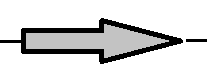
1) Object Input
| 필드명 | 단위 | 설명 |
|---|---|---|
| 압력 | kg/cm² | Stream의 절대압력 |
| 온도 | ℃ | Stream의 섭씨온도 (0℃ 이상 입력). 압력과 온도의 조합으로 나머지 Properties 계산 |
| Dryness | - | Vapor Fraction(건도). 압력과 건도의 조합으로 Properties 계산. 사용 시 온도 입력필드는 공란으로 둠 |
| Flow Rate | kg/h | 질량유량. 앞에 v 첨자: 체적유량, s 첨자: 표준상태 체적유량예) v100, s100 |
| Fluid_id | - | 유체의 종류. 기본값: water. 복수 성분 시 [Fluid_id]:[조성비] 형식으로 쉼표 구분 예) CO2:4.99,O2:15.758,N2:74.107,H2O:3.887,Ar:1.258 |
2) 적용 가능한 Fluid_id
| 분류 | Fluid_id | 비고 |
|---|---|---|
| 물/증기 | water (H2O) | |
| 공기/기체 | Air, Nitrogen(N2), Oxygen(O2), Argon(Ar), Helium, Hydrogen(H2) | |
| 탄화수소류 | Methane, Ethane, Propane, Butane, Isobutane, Pentane, Hexane, Heptane, Octane | |
| 알코올류 | Methanol, Ethanol, Propanol, Butanol | |
| 암모니아/기타 | Ammonia(NH3), SulfurDioxide, CarbonMonoxide(CO2) | |
| 혼합냉매 | R404A, R407C, R410A, R507A |
3) Properties (출력)
| 항목 | 단위 |
|---|---|
| Press | kg/cm² |
| Temp | ℃ |
| sp.vol | m³/kg |
| Density | kg/m³ |
| Enthalpy | kcal/kg |
| Entropy | kcal/kg·℃ |
| CP | kcal/kg·℃ |
| Dryness | - |
| Inlet_energy | kcal/kg |
| Flow_rate | kg/h |
| Emis_NOx | ppmv |
| Emis_CO | ppmv |
3.2 turbine
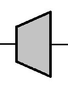
1) 계산 이론
turbine의 해석 이론은 등엔트로피 과정을 따르며, 다음 계산 수식을 적용합니다.
2) Object Input
| 필드명 | 단위 | 설명 |
|---|---|---|
| Outlet_press | kg/cm² | Turbine 출구압력 |
| Adabatic_eff | % | 터빈의 단열팽창 효율 (%). 숫자를 직접 입력하거나 유량에 따른 회귀식 입력 가능. 예) 숫자: 57.28 회귀식: n_flow:637,r_flow:650,y=-0.0000012425*x**2+0.0164815000*x+3.1295 |
3) Simulation Result
| 항목 | 단위 | 설명 |
|---|---|---|
| 발전출력 | kW | 계산된 발전출력 |
| 팽창효율 | % | 입력 또는 회귀식으로 계산된 팽창효율 |
3.3 valve
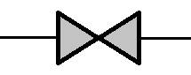
1) 계산 이론
valve 오브젝트의 해석 이론은 등엔탈피 조건을 따라 해석합니다. 즉 입출구의 엔탈피가 동일한 것으로 가정하고 Properties를 계산합니다.
2) Object Input
| 필드명 | 단위 | 설명 |
|---|---|---|
| Outlet_press | kg/cm² | 출구압력 입력 |
3) Simulation Result
| 항목 | 단위 | 설명 |
|---|---|---|
| Press(in) | kg/cm² | 입구측 압력 |
| Press(out) | kg/cm² | 출구측 압력 |
| Delta P | kg/cm² | 압력 차이 |
| Enthalpy(out) | kcal/kg | 출구 엔탈피 |
3.4 splitter
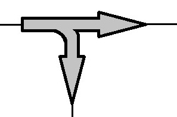
1) 계산 이론
분기시 Split ratio 비율대로 유량을 계산하고, Properties는 입력측과 동일한 Properties로 나누어집니다.
2) Object Input
| 필드명 | 단위 | 설명 |
|---|---|---|
| Split ratio | 0~1 또는 kg/h | Stream 2로 분기하는 유량 비율 또는 실제 분배량. 0~1 사이 입력: 분배 비율 / 1 이상 입력: 실제 분배량 (kg/h) / 0~1 사이의 실제 분배량은 F 첨자 사용 예) 비율: 0.2 | 실제 분배량: 5.3 | 실제 분배량(0.7 kg/h): F0.7 |
3) Simulation Result
| 항목 | 단위 | 설명 |
|---|---|---|
| 출력1 | kg/h | Stream 1로 분기되는 유체의 유량 |
| 출력2 | kg/h | Stream 2로 분기되는 유체의 유량 |
3.5 pipe
1) 계산 이론
2) Object Input
| 필드명 | 단위 | 설명 |
|---|---|---|
| diameter | mm | 배관의 내경. 직접 입력 또는 ND 첨자 뒤에 호칭경 기입(15A~1000A)예) 직접: 52.48 / 호칭경: ND50 |
| length | m | 배관의 직선 길이 |
| Equiv. Len | m | Fitting의 등가 길이 (Symbol 입력 가능) |
| Elevation | m | 배관의 수직 Elevation |
| Roughness | mm | 배관의 조도. 직접 입력 또는 Symbol 입력 예) 직접: 0.045 / Symbol: steel |
| Thermal Resist. | m·h·℃/kcal | 배관의 열저항. 직접 입력 시 외기온도 10℃ 기준.R:8.2,T:10 형식으로 열저항과 외기온도 동시 입력 가능 |
[표] Pipe Fitting 등가길이 (L/D)
| Fitting Name | Symbol | L/D |
|---|---|---|
| Gate Valve | GATE | 8 |
| Globe Valve | GLOBE | 340 |
| Angle Valve | ANGLE | 150 |
| Check Valve (Swing) | CHECK_SWING | 100 |
| Check Valve (Lift) | CHECK_LIFT | 250 |
| Ball Valve | BALL | 20 |
| Butterfly Valve | BUTTERFLY | 35 |
| Y-Strainer | Y_STRAINER | 150 |
| Basket Strainer | BASKET_STRAINER | 200 |
| True Tee | TEE, TEE_TRUE | 20 |
| Branch Tee | TEE_BRANCH | 60 |
| Standard Elbow (90°) | ELBOW, ELBOW_90 | 30 |
| Standard Elbow (45°) | ELBOW_45 | 16 |
| Long Radius Bend (r/d=1.5) | ELBOW_L | 12 |
| Short Radius Bend (r/d=1.0) | ELBOW_S | 20 |
| Reducer | RED | 10 |
| Union | UNION | 2 |
[표] 배관 조도 (Roughness)
| 번호 | Symbol | 조도 (mm) |
|---|---|---|
| 1 | Steel | 0.045 |
| 2 | Copper | 0.0015 |
| 3 | Galva | 0.15 |
3) Simulation Result
| 항목 | 단위 | 설명 |
|---|---|---|
| In-Dia | mm | 배관의 내경 |
| Equiv Length | m | 배관의 상당장 |
| Roughness | mm | 배관의 조도 |
| Re | - | 레이놀즈 수(Reynolds Number) |
| Velocity | m/s | 배관의 유속 |
| 마찰계수 | - | Friction factor |
| Head Loss | mAq | 압력손실 |
| Heat Loss | kcal/h | 열손실 |
| Temp | ℃ | 출구온도 |
| Cond. | kg/h | 응축수 회수량 |
3.6 pump
1) 계산 이론
2) Object Input
| 필드명 | 단위 | 설명 |
|---|---|---|
| Head | m | 펌프의 양정. 숫자 또는 유량에 따른 회귀식 입력 예) 20 / y=-0.000016*x**3+0.000277*x+45.04 |
| Pump Eff | % | 펌프의 효율. 숫자 또는 회귀식 입력 예) 57.8 / y=-0.000004*x**2+0.034*x-0.657 |
| Motor Eff | % | 모터의 효율. 공란 시 내장 효율표 자동 적용 |
3) Simulation Result
| 항목 | 단위 | 설명 |
|---|---|---|
| Flow | kg/h | 펌프에 인입하는 유체의 유량 |
| Head | m | 펌프의 양정 |
| Pump Eff | % | 펌프의 효율 |
| Motor Eff | % | 모터의 효율 |
| Pump Power | kW | 축동력 |
| Motor Power | kW | 소비동력 |
| NPSH Available | m | Net Positive Suction Head |
3.7 exchanger
1) 계산 이론
2) 포트 구성
3) Object Input
| 필드명 | 기본값 | 설명 |
|---|---|---|
| Design Basis | S1_Outlet_T | 설계 기준 선택 (ComboBox) · Stream1: 출구온도(℃) → S1_Outlet_T · Stream2: 출구온도(℃) → S2_Outlet_T · Stream1: 출구 VF(-) → S1_Outlet_X · Stream2: 출구 VF(-) → S2_Outlet_X |
| Outlet Value | 100.0 | Design Basis에 따른 목표값. 온도(℃) 또는 건도(-) |
| U (W/m²·K) | 280 | 열관류율 (전열계수) |
| Type | counter | 유동 형태: counter (향류) 또는 parallel (병류) |
| Press Drop(S1) | 0.1 kg/cm² | Stream 1 측 압력강하 |
| Press Drop(S2) | 0.1 kg/cm² | Stream 2 측 압력강하 |
| Efficiency(%) | 100 | 열교환 효율 (%) |
4) Simulation Result
| 항목 | 단위 | 설명 |
|---|---|---|
| Heat Duty | kW | 실제 열교환량 |
| Heat Duty (Ideal) | kW | 효율 100% 기준 이상적 열교환량 |
| Heat Loss (Eff) | kW | 효율에 의한 열손실 |
| Efficiency | % | 열교환 효율 |
| Type | - | 유동 형태 (counter / parallel) |
| LMTD | ℃ | 대수 평균 온도차 |
| A Required | m² | 필요 전열면적 |
| UA Required | W/K | UA값 (열관류율 × 면적) |
| Temp(S1_out) | ℃ | Stream 1 출구 온도 |
| Temp(S2_out) | ℃ | Stream 2 출구 온도 |
3.8 mixer
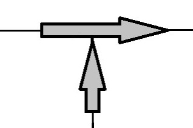
1) 계산 이론
2) 포트 구성
3) Object Input
| 필드명 | 기본값 | 설명 |
|---|---|---|
| Pressure Basis | min | 혼합 후 출구 압력 기준 선택 (ComboBox) · min: 최소 압력 기준 (두 Stream 중 낮은 압력 적용) · max: 최대 압력 기준 (두 Stream 중 높은 압력 적용) |
4) Simulation Result
혼합된 하나의 출구 Stream의 Properties가 Properties 패널에 표시됩니다.
| 항목 | 단위 | 설명 |
|---|---|---|
| Press | kg/cm² | 혼합 출구 압력 |
| Temp | ℃ | 혼합 출구 온도 |
| Enthalpy | kcal/kg | 혼합 출구 엔탈피 |
| Flow Rate | kg/h | 혼합 총 유량 (m1 + m2) |
3.9 VLSeperator
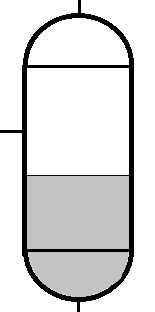
1) 계산 이론
2) 포트 구성
3) Object Input
4) Simulation Result
| 항목 | 단위 | 설명 |
|---|---|---|
| VLS Pressure | kg/cm² | 분리기 내부 압력 |
| Vapor Flow | kg/h | 기상 출구 유량 |
| Vapor Enthalpy | kcal/kg | 기상 출구 엔탈피 |
| Liquid Flow | kg/h | 액상 출구 유량 |
| Liquid Enthalpy | kcal/kg | 액상 출구 엔탈피 |
3.10 comp
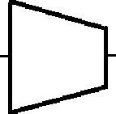
1) 계산 이론
2) 포트 구성
3) Object Input
| 필드명 | 기본값 | 설명 |
|---|---|---|
| Calculation Mode | Adiabatic | 계산 방법 선택 (ComboBox) · Adiabatic: 단열 압축 · Polytropic: 다방 압축 |
| Outlet Pressure | - | 출구 압력 (kg/cm²) |
| Calc. Efficiency | 80 | 압축 효율 (%) |
4) Simulation Result
| 항목 | 단위 | 설명 |
|---|---|---|
| Comp Ratio | - | 압축비 (P_out / P_in) |
| Comp Temperature | ℃ | 출구 온도 |
| Comp Efficiency | - | 압축 효율 (소수점) |
| Comp Power | kW | 소비 동력 |
3.11 cooling_tower
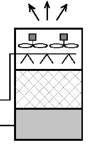
1) 계산 이론
2) 포트 구성
ct_in 포트가 연결되지 않은 경우 순환수 유량(Circul. Water Flow)을 반드시 입력해야 합니다.
3) Object Input
| 필드명 | 기본값 | 단위 | 설명 |
|---|---|---|---|
| Wet Bulb(air) | 27 | ℃ | 외기 습구온도 |
| Approch | 5 | ℃ | 냉각탑 Approach 온도 차이 (T_out = T_WB + Approach) |
| Circul. Water Flow | - | kg/h | 순환수 유량. 입력 시 ct_in 연결된 유량에 우선 적용 |
| Evaperate Rate | 0.75 | - | 증발 효율 (0~1) |
| Concentration Factor | 5 | - | 농축배율 (반드시 1 초과) |
4) Simulation Result
| 항목 | 단위 | 설명 |
|---|---|---|
| Cooling capacity | kcal/h | 냉각용량 |
| Temp_in | ℃ | 순환수 입구 온도 |
| Temp_out | ℃ | 순환수 출구 온도 (= T_WB + Approach) |
| Circulation | kg/h | 순환수 유량 |
| Evaporation | kg/h | 증발 손실량 |
| Drift | kg/h | 드리프트(비산) 손실량 |
| Blowdown | kg/h | 블로다운 유량 |
| Makeup | kg/h | 보급수 필요량 |
3.12 power_gen
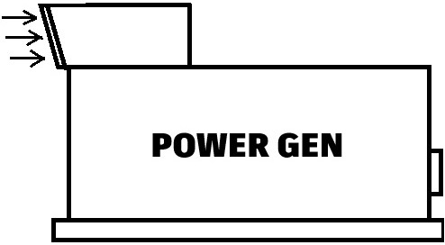
1) 계산 이론
배기가스의 조성, 온도, 압력을 사용자가 직접 입력하며, CoolProp을 이용하여 엔탈피, 밀도, 비체적 등의 물성을 계산합니다. NOx 농도는 배기가스 조성에서 계산된 실제 건조 O₂% 기준으로 다음 오브젝트(SCR 등)에 전달됩니다.
2) 포트 구성
입력 포트 없음. 출력 포트 1개 (배기가스).
3) Object Input
| 필드명 | 단위 | 설명 |
|---|---|---|
| Power Gen | kW | 발전기 출력 (발전량). 회귀식의 x 변수로도 활용됨 |
| EXH.Flow | kg/h | 배기가스 유량. 숫자 또는 발전량에 따른 회귀식 입력 가능 예) 10000 / y=15.2*x+500 |
| EXH.Press | kg/cm² | 배기가스 출구 압력 |
| EXH.Temp | ℃ | 배기가스 출구 온도. 숫자 또는 발전량에 따른 회귀식 입력 가능 예) 515 / y=0.05*x+480 |
| EXH.Comp | - | 배기가스 조성 (질량분율). [성분]:[값] 형식으로 쉼표 구분 예) CO2:4.99,O2:15.758,N2:74.107,H2O:3.887,Ar:1.258 |
| NOx Emission | ppmv | NOx 배출 농도 (사용자 입력 기준 O₂% 기준) |
| O2 Conc. | % | NOx 기준 O₂ 농도 (건조, %) |
4) Simulation Result
| 항목 | 단위 | 설명 |
|---|---|---|
| Power Gen | kW | 발전량 |
| Exhaust Flow | kg/h | 배기가스 유량 |
| Exhaust Composition | - | 배기가스 조성 (질량분율) |
| Exhaust Temp | ℃ | 배기가스 온도 |
| Exhaust Press | kg/cm² | 배기가스 압력 |
| NOx Emission | ppmv | NOx 배출 농도 |
3.13 burner
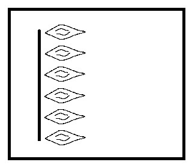
1) 계산 이론
2) 포트 구성
3) Object Input
| 필드명 | 기본값 | 단위 | 설명 |
|---|---|---|---|
| Fuel Mass Flow | - | kg/h | 연료의 질량 유량 |
| Fuel Composition(wt%) | - | - | 연료 조성 (질량분율 또는 질량%). [성분]:[값] 형식, 쉼표 구분 지원 성분: CH4, C2H6, C3H8, C4H10, H2, CO, CO2, N2, O2, Ar 등 예) ch4:90,c2h6:5,c3h8:3,co2:1,n2:1 |
| Efficiency | 100 | % | 버너 연소 효율 (0~100%) |
| NOx_Emis | - | ppmv | NOx 배출 농도 (직접 지정 시). 공란이면 입력 Stream의 NOx를 통과시킴 |
| O2 Conc. | - | % | NOx 기준 O₂ 농도 (건조, %). NOx를 직접 지정 시 함께 입력 |
4) Simulation Result
| 항목 | 단위 | 설명 |
|---|---|---|
| Fuel Mass Flow | kg/h | 연료 질량 유량 |
| Fuel Vol Flow | Nm³/h | 연료 체적 유량 (표준 상태) |
| Out Mass Flow | kg/h | 연소 후 배기가스 총 질량 유량 |
| Out Vol Flow | Nm³/h | 연소 후 배기가스 총 체적 유량 (표준 상태) |
| Out Temp | ℃ | 연소 후 배기가스 온도 |
| Efficiency | % | 연소 효율 |
| O2 Req/Avail | kmol/h | 필요 O₂ 몰유량 / 공급 O₂ 몰유량 |
| NOx(dry,std) | ppmv | NOx 배출 농도 (건조, 표준 O₂% 기준) |
| O2_out(dry) | % | 출구 배기가스 건조 O₂ 농도 |
| HHV / LHV (Mass) | kcal/kg | 연료의 고위 / 저위 발열량 (질량 기준) |
| HHV / LHV (Vol) | kcal/Nm³ | 연료의 고위 / 저위 발열량 (체적 기준) |
| Heat Applied | kcal/h | 실제 투입 열량 (LHV × 효율) |
| Out Comp(vol) | % | 연소 후 배기가스 체적 조성 |
3.14 scr_urea
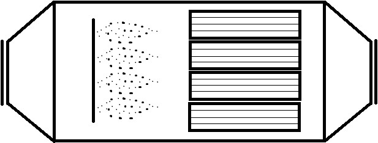
1) 계산 이론
2) 포트 구성
3) Object Input
| 필드명 | 단위 | 설명 |
|---|---|---|
| NOx_Emis(ppmv) | ppmv | 목표 NOx 출구 농도 (표준 O₂ 기준) |
| O2 Conc.(%) | % | NOx 농도의 기준 O₂ 농도 (건조, %) 예) 한국 법정 기준: 15% O₂ 기준 → 15 입력 |
| Urea_Constru.(%) | % | 요소수(Urea 수용액)의 농도 (%) 예) AdBlue (32.5%), 일반 요소수 (40~50%) |
| Equiv_Ratio(-) | - | 당량비 (NH₃/NO 몰비). 기준값 1.0. 실제는 1.0~1.05 범위 적용 |
| Spray_Urea_Constru(%) | % | 분무 요소수에서의 Urea 농도 (%). 추가 희석수 양 계산에 사용 |
4) Simulation Result
| 항목 | 단위 | 설명 |
|---|---|---|
| Inlet Flow (Dry) | Nm³/h | 입구 건조 배기가스 체적 유량 |
| NOx Inlet concentration (std) | ppmv | 입구 NOx 농도 (표준 O₂ 기준) |
| NOx Outlet concentration (std) | ppmv | 출구 NOx 농도 (표준 O₂ 기준) |
| NOx Removal Efficiency | % | NOx 제거율 |
| Urea Concentration | % | 요소수 농도 |
| Equivalence Ratio | - | 당량비 |
| Urea Consumption | kg/h (L/h) | 요소수 사용량 |
| Water in Urea | kg/h | 요소수 내 물 함량 |
| Water Spray (added) | kg/h | 추가 분사수량 |
| Water Total to Gas | kg/h | 배기가스에 유입되는 총 수분량 |
| NOx Emission Amount (actual) | kg/h | 실제 NOx 질량 배출량 |
3.15 scr_ammonia

1) 계산 이론
2) 포트 구성
3) Object Input
| 필드명 | 단위 | 설명 |
|---|---|---|
| NOx_Emis(ppmv) | ppmv | 목표 NOx 출구 농도 (표준 O₂ 기준) |
| O2 Conc.(%) | % | NOx 농도의 기준 O₂ 농도 (건조, %) |
| Ammonia_Constru.(%) | % | 암모니아 수용액의 NH₃ 농도 (%) 예) 25% 암모니아수 → 25 입력 |
| Equiv_Ratio(-) | - | 당량비 (NH₃/NO 몰비). 기준값 1.0 |
4) Simulation Result
| 항목 | 단위 | 설명 |
|---|---|---|
| Inlet Flow (Dry) | Nm³/h | 입구 건조 배기가스 체적 유량 |
| NOx Inlet concentration (std) | ppmv | 입구 NOx 농도 (표준 O₂ 기준) |
| NOx Outlet concentration (std) | ppmv | 출구 NOx 농도 (표준 O₂ 기준) |
| NOx Removal Efficiency | % | NOx 제거율 |
| Ammonia Concentration | % | 암모니아 수용액 농도 |
| Equivalence Ratio | - | 당량비 |
| NH3 Consumption | kg/h (L/h) | 암모니아 수용액 소비량 |
| Pure NH3 (actual) | kg/h | 실제 주입되는 순수 NH₃ 양 (당량비 포함) |
| O2 for Reaction | kmol/h | 반응에 소요되는 O₂ 몰유량 |
| Water in NH3 Solution | kg/h | 암모니아 수용액 내 물 함량 |
| Water Total to Gas | kg/h | 배기가스에 유입되는 총 수분량 |
| NOx Emission Amount (actual) | kg/h | 실제 NOx 질량 배출량 |
scr_urea는 요소수(Urea 수용액)를 환원제로 사용하며 분무 희석수 계산을 포함합니다. scr_ammonia는 암모니아 수용액을 직접 주입하는 방식으로, 요소수 열분해 반응 없이 직접 SCR 반응합니다. 두 오브젝트 모두 출구 배기가스 온도는 수분 유입에 따른 혼합 엔탈피 계산으로부터 결정됩니다.
3.16 note
1) Object Input
| 필드명 | 기본값 | 설명 |
|---|---|---|
| Note | - | 표시할 텍스트 내용 (여러 줄 입력 가능) |
| Font Size | 11 | 글자 크기 (포인트) |
| Font Color | black | 글자 색상. 입력 가능 값: black, red, blue, green |
| Alignment | left | 텍스트 정렬 방식. 입력 가능 값: left, center, right |
| Background Color | white | 배경 색상. 입력 가능 값: yellow, lightgray, white, 투명 |
| Box Line Color | darkgray | 테두리 색상. 입력 가능 값: darkgray, red, green, black, 투명 |
| Size(width) | 100 | 노트 박스의 가로 크기 (픽셀) |
| Size(height) | 50 | 노트 박스의 세로 크기 (픽셀) |
2) 사용 방법
- 팔레트에서 note 오브젝트를 Flowsheet로 Drag & Drop하여 생성합니다.
- 오브젝트를 더블클릭하면 입력 패널이 활성화되어 텍스트 및 스타일을 설정할 수 있습니다.
- CALCULA 버튼을 눌러도 note는 계산에 포함되지 않습니다 (표시 전용).
- 마우스 드래그로 Flowsheet 내 자유롭게 이동할 수 있습니다.
3.17 properties_table
1) 주요 기능
- 선택한 MassStream 오브젝트들의 Properties를 동적으로 표 형태로 표시합니다.
- 행(Row): Properties 항목 (온도, 압력, 밀도, 엔탈피, 엔트로피, 유량 등)
- 열(Column): 각 Stream 오브젝트 이름
- 열 헤더를 더블클릭하면 Stream을 추가하거나 변경할 수 있습니다.
- 행 헤더를 더블클릭하면 표시할 Properties 항목을 변경할 수 있습니다.
- CALCULA 후 자동으로 각 Stream의 계산된 Properties가 표에 업데이트됩니다.
2) 기본 표시 Properties 항목
| 항목 | 단위 |
|---|---|
| Temperature | ℃ |
| Pressure | kg/cm² |
| Density | kg/m³ |
| Enthalpy | kcal/kg |
| Entropy | kcal/kg·K |
| Flow Rate | kg/h |
3) 사용 방법
- 팔레트에서 properties_table 오브젝트를 Flowsheet로 Drag & Drop하여 생성합니다.
- 열 헤더(Column Header)를 더블클릭하여 표시할 Stream 오브젝트 이름을 입력합니다.
- 행 헤더(Row Header)를 더블클릭하여 표시할 Properties 항목을 변경합니다.
- CALCULA 버튼을 누르면 연결된 Stream의 계산된 Properties가 표에 자동 업데이트됩니다.
- 마우스 드래그로 Flowsheet 내 자유롭게 이동할 수 있으며, 테두리를 드래그하여 크기 조절이 가능합니다.
부록. 주요 단위 및 변환
| 구분 | 단위 | 환산 |
|---|---|---|
| 압력 | kg/cm² | 1 kg/cm² = 98,066.5 Pa = 0.9807 bar |
| 엔탈피 | kcal/kg | 1 kcal/kg = 4,184 J/kg |
| 엔트로피 | kcal/kg·K | 1 kcal/kg·K = 4,184 J/kg·K |
| 비열 | kcal/kg·℃ | 1 kcal/kg·℃ = 4,184 J/kg·K |
| 체적유량 (표준) | Nm³/h | 0℃, 1 atm 기준 (22.414 L/mol) |
| 동력 | kW | 1 kW = 860 kcal/h = 1,000 W |
| 열전달계수 | W/m²·K | 1 kcal/m²·h·℃ = 1.163 W/m²·K |
Process Simulation Program — Manual Rev. 1.0 | 2026.03.19